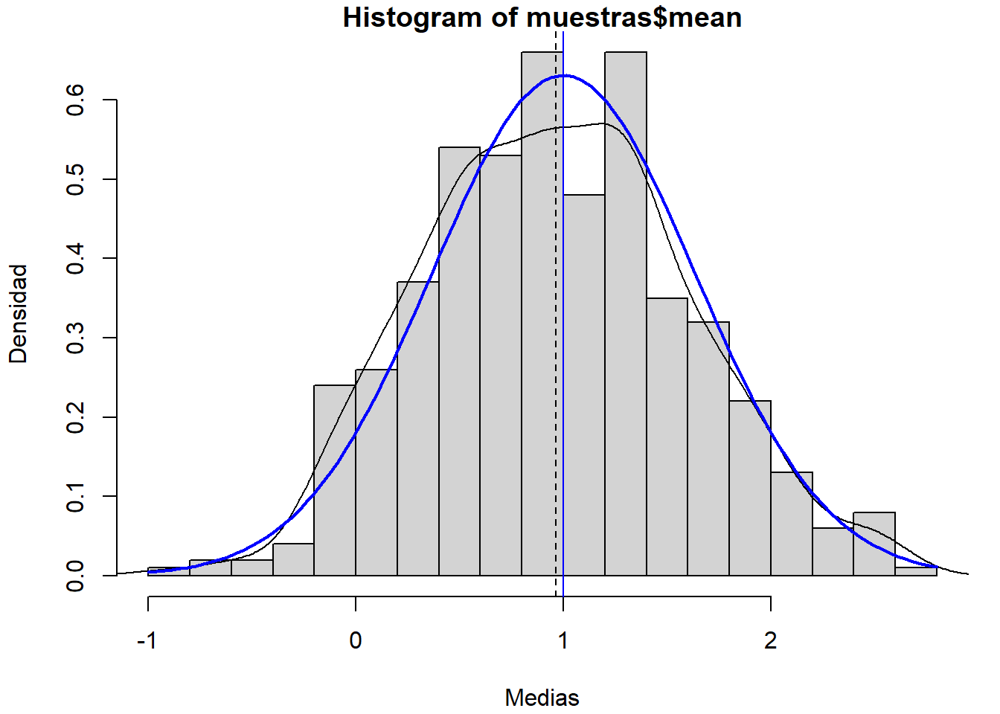
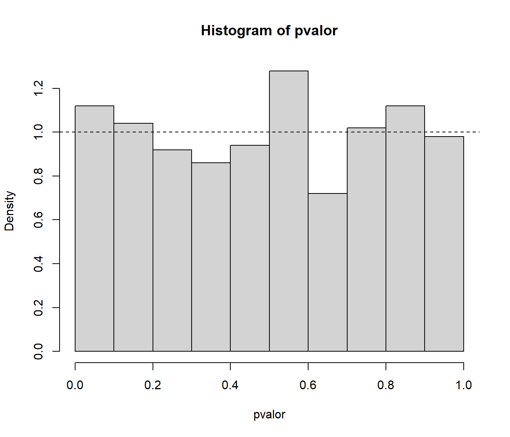

7.4 Métodos Monte Carlo en Inferencia Estadística
*** Work in progress ***: Esta sección es muy preliminar y variará en siguientes versiones
Como ya se comentó en la introducción muchas de las aplicaciones de la simulación serían de utilidad en Estadística:
Distribución de estimadores puntuales/estadísticos:
Aproximación de la distribución.
Aproximación de características de la distribución.
Valided de la distribución asintótica.
Comparación de estimadores.
Estimación por intervalo de confianza:
Obtención de intervalos/bandas de confianza (probabilidad).
Análisis de un estimador por intervalo de confianza.
Contrastes de hipótesis:
Aproximación del \(p\)-valor.
Análisis de un contraste de hipótesis.
Validación teoría.
Métodos de remuestro bootstrap.
Inferencia Bayesiana
…
En esta sección nos centraremos en estudios de simulación Monte Carlo en algunas de estas aplicaciones y daremos algún ejemplo de métodos Monte Carlo para inferencia estadística. La mayoría de los métodos Monte Carlo los podríamos clasificar como métodos de remuestreo y se tratarán con mayor profundidad en capítulos siguientes.
Observación:
En esta sección se obtendrán simulaciones de estadísticos a partir de muestras (podemos pensar que se parte de generaciones de una variable multivariante).
En la mayoría de los ejemplos se generan todas las muestras de una vez, se guardan y se procesan vectorialmente (normalmente empleando la función apply).
Como ya se comentó en el Capítulo 1.3, en problemas mas complejos, en los que no es necesario almacenar todas las muestras, puede ser preferible emplear un bucle para generar y procesar las muestras iterativamente.
7.4.1 Distribución en el muestreo
Ejercicio 7.2 (Distribución de la media muestral)
Si \(X_{1},\ldots,X_{n}\) es una muestra aleatoria simple de una variable aleatoria \(X \sim N\left( \mu, \sigma \right)\), la distribución en el muestreo de: \[\hat{\mu}=\overline{X}=\dfrac{1}{n}\sum_{i=1}^{n}X_{i}\] es: \[\overline{X} \sim N\left( \mu,\dfrac{\sigma}{\sqrt{n}}\right)\] Confirmar este resultado mediante simulación, para ello:
Crear un conjunto de datos
muestrascon 500 muestras de tamaño \(n=10\) de una \(N(1,2)\). Añadir al conjunto de datos las estimaciones de la media y desviación típica obtenidas con cada una de las muestras.Valores iniciales:
set.seed(54321) # Fijar semilla para reproducibilidad nsim <- 500 nx <- 10Valores teóricos:
mux <- 1 sdx <- 2Simulación de las muestras (al estilo
Rcmdr):muestras <- as.data.frame(matrix(rnorm(nsim*nx, mean=mux, sd=sdx), ncol=nx)) rownames(muestras) <- paste("muestra", 1:nsim, sep="") colnames(muestras) <- paste("obs", 1:nx, sep="") str(muestras)## 'data.frame': 500 obs. of 10 variables: ## $ obs1 : num 0.642 -0.856 -0.568 -2.301 0.184 ... ## $ obs2 : num 3.483 2.216 1.1 4.305 0.677 ... ## $ obs3 : num 1.24 -1.51 -3.98 2.29 2.46 ... ## $ obs4 : num 3.286 0.947 0.953 -1.663 2.623 ... ## $ obs5 : num 3.77 -1.34 1.61 -2.46 1.11 ... ## $ obs6 : num -2.044 0.32 3.046 0.136 3.555 ... ## $ obs7 : num 0.6186 -1.8614 4.3386 0.0996 0.8334 ... ## $ obs8 : num -0.829 2.202 -1.688 1.534 -0.114 ... ## $ obs9 : num 0.4904 -0.6713 0.5451 -0.6517 0.0168 ... ## $ obs10: num 2.79 2.84 1.27 3.93 2.17 ...Estimaciones:
muestras$mean <- rowMeans(muestras[,1:nx]) muestras$sd <- apply(muestras[,1:nx], 1, sd)La fila
muestras[i,]contiene las observaciones de la i-ésima muestra y la correspondiente media y desviación típica.muestras[1,]## obs1 obs2 obs3 obs4 obs5 obs6 obs7 ## muestra1 0.6421985 3.482661 1.242483 3.28559 3.766896 -2.04443 0.6186323 ## obs8 obs9 obs10 mean sd ## muestra1 -0.8293636 0.4903819 2.790091 1.344514 1.951292
Normalmente emplearemos sin embargo una ordenación por columnas (cada fila se corresponderá con una generación).
Generar el histograma (en escala de densidades) de las medias muestrales y compararlo con la densidad teórica.
Distribución de la media muestral:
hist(muestras$mean, freq = FALSE, breaks = "FD", xlab = "Medias", ylab = "Densidad") # Densidad observada (estimación) lines(density(muestras$mean)) # Densidad teórica (bajo normalidad) curve(dnorm(x, mux, sdx/sqrt(nx)), lwd = 2, col = "blue", add = TRUE) # Aproximación del valor esperado de la media muestral mediante simulación abline(v = mean(muestras$mean), lty = 2) # Valor esperado de la media muestral (teórico) abline(v = mux, col = "blue")Figura 7.9: Distribución de la media muestral de una distribución normal.
Ejercicio 7.3 (Distribución de la media muestral continuación)
Si \(X_{1},\ldots,X_{n}\) es una m.a.s. de una variable aleatoria \(X\) (cualquiera) con \(E\left( X \right) = \mu\) y \(Var\left( X \right) = \sigma^{2}\), por el Teorema Central del Límite, la distribución en el muestreo de \(\hat{\mu}=\overline{X}\) se aproxima a la normalidad: \[\overline{X}\underset{n\rightarrow\infty}{\longrightarrow} N\left( \mu, \dfrac{\sigma}{\sqrt{n}}\right)\] Típicamente se suele considerar que esta aproximación es buena para tamaños muestrales \(n>30\), aunque dependerá de las características de la distribución de \(X\).
Repetir el Ejercicio 7.2 anterior considerando muestras de una \(Exp(1)\) (tener en cuenta que \(X\sim Exp(\lambda)\Rightarrow\mu_{X}=\sigma_{X}=1/\lambda\)). ¿Qué ocurre con la distribución de la media muestral?
set.seed(54321) # Fijar semilla para reproducibilidad nsim <- 500 nx <- 10 # nx <- 50Valores teóricos:
lambda <- 1 muexp <- 1/lambda sdexp <- muexpSimulación de las muestras:
muestras2 <- as.data.frame(matrix(rexp(nsim*nx, rate=lambda), ncol=nx)) rownames(muestras2) <- paste("muestra", 1:nsim, sep="") colnames(muestras2) <- paste("obs", 1:nx, sep="")Estimaciones:
muestras2$mean <- rowMeans(muestras2[,1:nx]) muestras2$sd <- apply(muestras2[,1:nx], 1, sd)Distribución de la media muestral:
hist(muestras2$mean, xlim = c(-0.1, 2.5), freq = FALSE, breaks = "FD", xlab = "Medias", ylab = "Densidad") # Densidad observada (estimación) lines(density(muestras2$mean)) # Distribución asintótica (TCL) curve(dnorm(x,muexp,sdexp/sqrt(nx)), lwd=2, col="blue", add=TRUE) # Aproximación del valor esperado de la media muestral mediante simulación abline(v=mean(muestras2$mean),lty=2) # Valor esperado de la media muestral (teórico) abline(v=muexp, col="blue")Figura 7.10: Distribución de la media muestral de una distribución exponencial y distribución asintótica.
Aumentar el tamaño muestral a 50. ¿Se aproxima más la distribución de las medias muestrales a la teórica bajo normalidad?
Ejecutar el código del apartado anterior fijando
nx <- 50.
7.4.2 Intervalos de confianza
Ejercicio 7.4 (Intervalo de confianza para la media)
A partir del enunciado del Ejercicio 7.2, se deduce que el intervalo de confianza (de nivel \(1-\alpha\)) para la media \(\mu\) de una población normal con varianza conocida es: \[IC_{1-\alpha}\left( \mu\right) = \left( \overline{X}-z_{1-\alpha/2}\dfrac{\sigma}{\sqrt{n}},\ \overline{X} + z_{1-\alpha/2}\dfrac{\sigma}{\sqrt{n}} \right).\] La idea es que el \(100(1-\alpha)\%\) de los intervalos así construidos contentrán el verdadero valor del parámetro.
Utilizando el conjunto de datos
muestrasdel ejercicio 1 (500 muestras de tamaño \(n=10\) de una \(N(1,2)\)), añadir en dos nuevas variables los extremos del intervalo de confianza para la media con varianza conocida al conjunto de datos. Analizar la cobertura de estas estimaciones por IC.IC para la media con varianza conocida (bajo normalidad):
alfa <- 0.05 z <- qnorm(1 - alfa/2) muestras$ici <- muestras$mean - z*sdx/sqrt(nx) muestras$ics <- muestras$mean + z*sdx/sqrt(nx)Cobertura de las estimaciones por IC:
muestras$cob <- (muestras$ici < mux) & (mux < muestras$ics) ncob <- sum(muestras$cob) # Nº de intervalos que contienen la verdadera media ncob## [1] 480100*ncob/nsim # Proporción de intervalos## [1] 96100*(1 - alfa) # Proporción teórica bajo normalidad## [1] 95Como ejemplo ilustrativo, generamos el gráfico de los primeros 50 intervalos:
m <- 50 tmp <- muestras[1:m,] attach(tmp) color <- ifelse(cob,"blue","red") plot(1:m, mean, col = color, ylim = c(min(ici),max(ics)), xlab = "Muestra", ylab = "IC") arrows(1:m, ici, 1:m, ics, angle = 90, length = 0.05, code = 3, col = color) abline(h = mux, lty = 3)Figura 7.11: Cobertura de las estimaciones por IC.
detach(tmp)Repetir el apartado anterior considerando muestras de una \(Exp(1)\). ¿Qué ocurre con la cobertura del intervalo de confianza obtenido bajo normalidad?
Ejecutar el código del apartado a) del ejercicio 2.
IC para la media con varianza conocida (bajo normalidad)
alfa <- 0.05 z <- qnorm(1 - alfa/2) muestras2$ici <- muestras2$mean - z*sdexp/sqrt(nx) muestras2$ics <- muestras2$mean + z*sdexp/sqrt(nx)Cobertura de las estimaciones por IC:
muestras2$cob <- (muestras2$ici < muexp) & (muexp < muestras2$ics) ncob <- sum(muestras2$cob) # Nº de intervalos que contienen la verdadera media ncob## [1] 469100*ncob/nsim # Proporción de intervalos## [1] 93.8100*(1 - alfa) # Proporción teórica bajo normalidad## [1] 95Como ejemplo ilustrativo, generamos el gráfico de los primeros 100 intervalos:
m <- 100 tmp <- muestras2[1:m,] attach(tmp) color <- ifelse(cob,"blue","red") plot(1:m, mean, col = color, ylim = c(min(ici),max(ics)), xlab = "Muestra", ylab = "IC") arrows(1:m, ici, 1:m, ics, angle = 90, length = 0.05, code = 3, col = color) abline(h = muexp, lty = 3)Figura 7.12: Cobertura de las estimaciones por IC (bajo normalidad).
detach(tmp)¿Qué ocurre si aumentamos el tamaño muestral a 50?
Ejecutar el código del ejercicio anterior fijando
nx <- 50y el del apartado anterior.
En los apartados b) y c) podíamos considerar bootstrap descrito en siguientes capítulos.
Podemos aproximar por simulación los intervalos de probabilidad de la media muestral (tendríamos una idea del valor esperado de lo que obtendríamos con el bootstrap percentil; en este caso el estimador es insesgado…):
# Distribución de la media muestral
hist(muestras2$mean, freq=FALSE, breaks="FD",
main="Distribución de la media muestral", xlab="Medias", ylab="Densidad")
# Densidad observada (estimación)
lines(density(muestras2$mean), lwd=2, col='red')
# Densidad teórica (bajo normalidad)
curve(dnorm(x,muexp,sdexp/sqrt(nx)), col="blue", add=TRUE)
# Aproximación por simulación del valor esperado de la media muestral
abline(v=mean(muestras2$mean), lty=2)
# Valor esperado de la media muestral (teórico)
abline(v=muexp, col="blue")
# IP bajo normalidad
ic.aprox <- apply(muestras2[ ,c('ici','ics')], 2, mean)
## ic.aprox
## ici ics
## 0.3865199 1.6261099
# Intervalo de probabilidad para la media muestral aproximado bajo normalidad
abline(v = ic.aprox, col='blue')
# Intervalo de probabilidad para la media muestral (aproximado por simulación)
ic.sim <- quantile(muestras2$mean, c(alfa/2, 1 - alfa/2))
## ic.sim
## 2.5% 97.5%
## 0.4714233 1.8059094
# IP (aprox.)
abline(v=ic.sim, lty=2, col='red') Nota:. Estimaciones puntuales, por intervalo de confianza y contrastes de hipótesis
para la media con varianza desconocida bajo normalidad
se pueden obtener con la función t.test.
Ejercicio 7.5 (Intervalo de confianza Agresti-Coull para una proporción)
El Intervalo de confianza para una proporción construido usando la aproximación normal tiene un mal comportamiento cuando el tamaño de la muestra es pequeño. Una simple y efectiva mejora consiste en añadir a la muestra \(2a\) elementos, \(a\) exitos y \(a\) fracasos. Así el intervalo de confianza al \(\left( 1-\alpha\right) 100\%\) para una proporción mejorado es: \[\begin{aligned} IC_{1-\alpha}^{a}\left( p\right) & =\left( \tilde{p}-z_{1-\alpha/2}\sqrt{\frac{\tilde{p}(1-\tilde{p})}{\tilde{n}}} \text{ , } \tilde{p}+z_{1-\alpha/2}\sqrt{\frac{\tilde{p}(1-\tilde{p})}{\tilde{n}}}\right) ,\\ \text{siendo }\tilde{n} & = n+2a \text{, } \tilde{p} = \frac{np+a}{\tilde{n}}. \end{aligned}\] En el caso de \(a=2\) se denomina IC Agresti-Coull.
(Los apartados a) y b) están basados en los ejemplos 1.5 y 1.6 de Suess y Trumbo, 2010)
Teniendo en cuenta que la variable aleatoria \(X=n\hat{p}\sim\mathcal{B}(n,p)\), obtener y representar gráficamente la cobertura teórica del intervalo de confianza estándar (\(a=0\)) de una proporción para una muestra de tamaño \(n=30\), \(\alpha=0.05\) y distintos valores de \(p\) (
p.teor <- seq(1/n, 1 - 1/n, length = 1000)).Parámetros:
n <- 30 alpha <- 0.05 adj <- 0 # (adj <- 2 para Agresti-Coull)Probabilidades teóricas:
m <- 1000 p.teor <- seq(1/n, 1 - 1/n, length = m)Posibles resultados:
x <- 0:n p.est <- (x + adj)/(n + 2 * adj) ic.err <- qnorm(1 - alpha/2) * sqrt(p.est * (1 - p.est)/(n + 2 * adj)) lcl <- p.est - ic.err ucl <- p.est + ic.errRecorrer prob. teóricas:
p.cov <- numeric(m) for (i in 1:m) { # cobertura de los posibles intervalos cover <- (p.teor[i] >= lcl) & (p.teor[i] <= ucl) # prob. de los posibles intervalos p.rel <- dbinom(x[cover], n, p.teor[i]) # prob. total de cobertura p.cov[i] <- sum(p.rel) }Gráfico coberturas:
plot(p.teor, p.cov, type = "l", ylim = c(1 - 4 * alpha, 1)) abline(h = 1 - alpha, lty = 2)Fuente Suess y Trumbo (2010).
Repetir el apartado anterior considerando intervalos de confianza Agresti-Coull (\(a=2\)).
Parámetros:
n <- 30 alpha <- 0.05 adj <- 2 # Agresti-Coull # Probabilidades teóricas: m <- 1000 p.teor <- seq(1/n, 1 - 1/n, length = m) # Posibles resultados: x <- 0:n p.est <- (x + adj)/(n + 2 * adj) ic.err <- qnorm(1 - alpha/2) * sqrt(p.est * (1 - p.est)/(n + 2 * adj)) lcl <- p.est - ic.err ucl <- p.est + ic.err # Recorrer prob. teóricas: p.cov <- numeric(m) for (i in 1:m) { # cobertura de los posibles intervalos cover <- (p.teor[i] >= lcl) & (p.teor[i] <= ucl) # prob. de los posibles intervalos p.rel <- dbinom(x[cover], n, p.teor[i]) # prob. total de cobertura p.cov[i] <- sum(p.rel) } # Gráfico coberturas: plot(p.teor, p.cov, type = "l", ylim = c(1 - 4 * alpha, 1)) abline(h = 1 - alpha, lty = 2)
Repetir el apartado anterior empleando simulación para aproximar la cobertura.
Parámetros:
n <- 30 alpha <- 0.05 adj <- 2 #' (2 para Agresti-Coull) set.seed(54321) nsim <- 500 # Probabilidades teóricas: m <- 1000 p.teor <- seq(1/n, 1 - 1/n, length = m)Recorrer prob. teóricas:
# m <- length(p.teor) p.cov <- numeric(m) for (i in 1:m) { # Equivalente a simular nsim muestras de tamaño n # ry <- matrix(rbinom(n*nsim, 1, p.teor[i]), ncol=n) # rx <- apply(ry, 1, sum) rx <- rbinom(nsim, n, p.teor[i]) p.est <- (rx + adj)/(n + 2 * adj) ic.err <- qnorm(1 - alpha/2) * sqrt(p.est * (1 - p.est)/(n + 2 * adj)) p.cov[i] <- mean( abs(p.est - p.teor[i]) < ic.err ) }Representar:
plot(p.teor, p.cov, type = "l", ylim = c(1 - 4 * alpha, 1)) abline(h = 1 - alpha, lty = 2)
Como ya se comentó, el caso de ajustar un modelo a los datos y realizar simulaciones a partir de ese modelo ajustado para aproximar las características de interés de un estadístico, se denomina también bootstrap paramétrico. Para más detalles ver por ejemplo la Sección 3.1 de Cao y Fernández-Casal (2020). En este libro, en las secciones 4.6.2 y B.3.2, se incluyen ejemplos adicionales de estudios de simulación.
7.4.3 Contrastes de hipótesis
Ver Capítulo 5 de Cao y Fernández-Casal (2020).
Ejercicio 7.6 (Test de Kolmogorov-Smirnov)
En la Sección 2.3 del Tema 2 se propuso el análisis de la bondad de ajuste de un generador de números pseudo-aleatorios mediante el test de Kolmogorov-Smirnov (ver Sección 4.5). Sin embargo, si \(H_{0}\) es compuesta (los parámetros desconocidos se estiman por máxima verosimilitud y se trabaja con \(\hat{F}_{0}\)) los cuantiles de la distribución (asintótica) de \(D_{n}\) pueden ser demasiado conservativos y sería preferible utilizar la distribución exacta.
Analizar el comportamiento del contraste de Kolmogorov-Smirnov para contrastar normalidad empleando repetidamente este test, considerando 1000 pruebas con muestras de tamaño 30 de una \(\mathcal{N}(0,1)\). Comparar gráficamente el ajuste de la distribución del \(p\)-valor a la de referencia (estudiar el tamaño del contraste).
Valores iniciales:
set.seed(54321) nx <- 30 mx <- 0 sx <- 1 nsim <- 1000 estadistico <- numeric(nsim) pvalor <- numeric(nsim)Realizar contrastes
for(isim in 1:nsim) { rx <- rnorm(nx, mx, sx) tmp <- ks.test(rx, "pnorm", mean(rx), sd(rx)) estadistico[isim] <- tmp$statistic pvalor[isim] <- tmp$p.value }Proporción de rechazos:
{ cat("\nProporción de rechazos al 1% =", mean(pvalor < 0.01), "\n") cat("Proporción de rechazos al 5% =", mean(pvalor < 0.05), "\n") cat("Proporción de rechazos al 10% =", mean(pvalor < 0.1), "\n") }## ## Proporción de rechazos al 1% = 0 ## Proporción de rechazos al 5% = 0 ## Proporción de rechazos al 10% = 0.001Análisis de los p-valores:
hist(pvalor, freq=FALSE) abline(h=1, lty=2) # curve(dunif(x,0,1), add=TRUE)
# Distribución empírica curve(ecdf(pvalor)(x), type = "s", lwd = 2, main = 'Tamaño del contraste', ylab = 'Proporción de rechazos', xlab = 'Nivel de significación') abline(a=0, b=1, lty=2) # curve(punif(x, 0, 1), add = TRUE)Repetir el apartado anterior considerando el test de Lilliefors (rutina
lillie.testdel paquetenortest).library(nortest, quietly = TRUE)Valores iniciales:
set.seed(54321) nx <- 30 mx <- 0 sx <- 1 nsim <- 1000 estadistico <- numeric(nsim) pvalor <- numeric(nsim)Realizar contrastes
for(isim in 1:nsim) { rx <- rnorm(nx, mx, sx) # tmp <- ks.test(rx, "pnorm", mean(rx), sd(rx)) tmp <- lillie.test(rx) estadistico[isim] <- tmp$statistic pvalor[isim] <- tmp$p.value }Proporción de rechazos:
{ cat("\nProporción de rechazos al 1% =", mean(pvalor < 0.01), "\n") cat("Proporción de rechazos al 5% =", mean(pvalor < 0.05), "\n") cat("Proporción de rechazos al 10% =", mean(pvalor < 0.1), "\n") }## ## Proporción de rechazos al 1% = 0.01 ## Proporción de rechazos al 5% = 0.044 ## Proporción de rechazos al 10% = 0.089Análisis de los p-valores:
hist(pvalor, freq=FALSE) abline(h=1, lty=2) # curve(dunif(x,0,1), add=TRUE)
# Distribución empírica curve(ecdf(pvalor)(x), type = "s", lwd = 2, main = 'Tamaño del contraste', ylab = 'Proporción de rechazos', xlab = 'Nivel de significación') abline(a=0, b=1, lty=2) # curve(punif(x, 0, 1), add = TRUE)Repetir el apartado a) contrastando una distribución exponencial y considerando 500 pruebas con muestras de tamaño 30 de una \(Exp(1)\).
Valores iniciales:
set.seed(54321) nx <- 30 ratex <- 1 nsim <- 500 estadistico <- numeric(nsim) pvalor <- numeric(nsim)Realizar contrastes
for(isim in 1:nsim) { rx <- rexp(nx, ratex) tmp <- ks.test(rx, "pexp", 1/mean(rx)) estadistico[isim] <- tmp$statistic pvalor[isim] <- tmp$p.value }Proporción de rechazos:
{ cat("\nProporción de rechazos al 1% =", mean(pvalor < 0.01), "\n") cat("Proporción de rechazos al 5% =", mean(pvalor < 0.05), "\n") cat("Proporción de rechazos al 10% =", mean(pvalor < 0.1), "\n") }## ## Proporción de rechazos al 1% = 0 ## Proporción de rechazos al 5% = 0.004 ## Proporción de rechazos al 10% = 0.008Análisis de los p-valores:
hist(pvalor, freq=FALSE) abline(h=1, lty=2) # curve(dunif(x,0,1), add=TRUE)# Distribución empírica curve(ecdf(pvalor)(x), type = "s", lwd = 2, main = 'Tamaño del contraste', ylab = 'Proporción de rechazos', xlab = 'Nivel de significación') abline(a=0, b=1, lty=2) # curve(punif(x, 0, 1), add = TRUE)
Diseñar una rutina que permita realizar el contraste KS de bondad de ajuste de una variable exponencial aproximando el \(p\)-valor por simulación y repetir el apartado anterior empleando esta rutina.
ks.exp.sim <- function(x, nsim = 10^3) { DNAME <- deparse(substitute(x)) METHOD <- "Kolmogorov-Smirnov Test of pexp by simulation" n <- length(x) RATE <- 1/mean(x) ks.exp.stat <- function(x, rate=1/mean(x)) { DMinus <- pexp(sort(x), rate=rate) - (0:(n - 1))/n DPlus <- 1/n - DMinus Dn = max(c(DMinus, DPlus)) } STATISTIC <- ks.exp.stat(x, rate = RATE) names(STATISTIC) <- "Dn" # PVAL <- 0 # for(i in 1:nsim) { # rx <- rexp(n, rate = RATE) # if (STATISTIC <= ks.exp.stat(rx)) PVAL <- PVAL+1 # } # PVAL <- PVAL/nsim # PVAL <- PVAL/(nsim + 1) # PVAL <- (PVAL + 1)/(nsim + 2) rx <- matrix(rexp(n*nsim, rate = RATE), ncol=n) PVAL <- mean(STATISTIC <= apply(rx, 1, ks.exp.stat)) return(structure(list(statistic = STATISTIC, alternative = "two.sided", p.value = PVAL, method = METHOD, data.name = DNAME), class = "htest")) }Simulación:
set.seed(54321) nx <- 30 ratex <- 1 nsim <- 500 estadistico <- numeric(nsim) pvalor <- numeric(nsim)Realizar contrastes
for(isim in 1:nsim) { rx <- rexp(nx, ratex) # tmp <- ks.test(rx, "pexp", 1/mean(rx)) tmp <- ks.exp.sim(rx, nsim = 200) estadistico[isim] <- tmp$statistic pvalor[isim] <- tmp$p.value }Proporción de rechazos:
{ cat("\nProporción de rechazos al 1% =", mean(pvalor < 0.01), "\n") cat("Proporción de rechazos al 5% =", mean(pvalor < 0.05), "\n") cat("Proporción de rechazos al 10% =", mean(pvalor < 0.1), "\n") }## ## Proporción de rechazos al 1% = 0.008 ## Proporción de rechazos al 5% = 0.058 ## Proporción de rechazos al 10% = 0.106Análisis de los p-valores:
hist(pvalor, freq=FALSE) abline(h=1, lty=2) # curve(dunif(x,0,1), add=TRUE)
# Distribución empírica curve(ecdf(pvalor)(x), type = "s", lwd = 2, main = 'Tamaño del contraste', ylab = 'Proporción de rechazos', xlab = 'Nivel de significación') abline(a=0, b=1, lty=2) # curve(punif(x, 0, 1), add = TRUE)
Estudiar la potencia de los contrastes de los apartados c) y d), considerando como alternativa una distribución Weibull.
La distribución exponencial es un caso particular de la Weibull:
dexp(x, ratex) == dweibull(x, 1, 1/ratex). Estudiamos lo que ocurre al desplazardweibull(x, shape, 1/ratex)con0 < shape < 2.CUIDADO: las simulaciones pueden requerir de mucho tiempo de computación (consideramos valores pequeños de
nxynsimen datos y enks.exp.sim).set.seed(54321) nx <- 20 ratex <- 1 # Puede ser interesante representarlo variando rate nsim <- 200 alfa <- 0.1 # Puede ser interesante representarlo variando alfa shapex <- seq(0.25, 1.75, len=21) preject <- numeric(length(shapex)) # Porporciones de rechazos con ks.test ks.test.p <- function(x) ks.test(x, "pexp", 1/mean(x))$p.value preject2 <- preject # Porporciones de rechazos con ks.exp.sim ks.exp.sim.p <- function(x) ks.exp.sim(x, 200)$p.value for (i in seq_along(shapex)) { rx <- matrix(rweibull(nx*nsim, shape = shapex[i], scale = 1/ratex), ncol=nx) preject[i] <- mean( apply(rx, 1, ks.test.p) <= alfa ) preject2[i] <- mean( apply(rx, 1, ks.exp.sim.p) <= alfa ) } plot(shapex, preject, type="l", main = paste("Potencia del contraste ( alfa =", alfa, ")"), xlab = "shape", ylab = "Proporción de rechazos") lines(shapex, preject2, lty = 2) abline(h = alfa, v = 1, lty = 3)
El estadístico de Kolmogorov-Smirnov Dn = max(c(DMinus, DPlus)) tiene ventajas desde el
punto de vista teórico, pero puede no ser muy potente para detectar diferencias entre la
distribución bajo la hipótesis nula y la distribución de los datos.
La ventaja de la aproximación por simulación es que no estamos atados a resultados teóricos
y podemos emplear el estadístico que se considere oportuno
(la principal desventaja es el tiempo de computación).
Por ejemplo, podríamos pensar en utilizar como estadístico la suma de los errores en
valor absoluto del correspondiente gráfico PP, y solo habría que cambiar el estadístico
Dn en la función ks.exp.sim por Dn = sum(abs( (1:n - 0.5)/n - pexp(sort(x), rate=rate) )).
7.4.4 Comparación de estimadores
Ejercicio 7.7 (Comparación de la eficiencia de la media muestral y de la mediana bajo contaminación)
Supongamos que estamos interesados en estudiar el efecto de datos atípicos en la estimación de la media teórica mediante la media y la mediana muestrales. Consideramos una variable aleatoria con distribución normal contaminada, en la que una observación procede de una \(N(0,1)\) con probabilidad 0.95 y de una \(N(3,3^2)\) con probabilidad 0.05 (mixtura). Se puede generar una muestra de esta variable (mixtura) mediante el método de composición descrito en la Sección 4.4, por ejemplo empleando el siguiente código:
p.sim <- rbinom(n, 1, 0.05)
dat.sim <- rnorm(n, 3*p.sim, 1+2*p.sim)Podemos comparar la densidad objetivo con la de los valores contaminados:
curve(dnorm(x, 0, 1), -3, 12, ylab = 'densidad', lty = 3)
curve(0.95*dnorm(x, 0, 1) + 0.05*dnorm(x, 3, 3), add = TRUE)Nota:. Como se comentó en la Sección 4.4, también es habitual simular este tipo de datos generando un porcentaje alto de valores (en este caso un 95%) de la distribución base (\(N(0,1)\)) y el resto (5%) de la distibución “contaminadora” (\(N(3,3^2)\)), aunque se suele considerar un porcentaje de contaminación del 1% o inferior (además, como en este caso concreto no va importar el orden, no sería necesario combinar aleatoriamente los valores).
Aproximar mediante simulación (500 generaciones) el sesgo y error estándar de la media y la mediana en el caso de una muestra de tamaño \(n=100\) (suponiendo que se pretende estimar la media no contaminada 0).
# media y mediana xsd <- 1 xmed <- 0 ndat <- 100 nsim <- 500 # for (isim in 1:nsim) # evitar matrix y apply set.seed(1) ntsim <- ndat*nsim p.sim <- rbinom(ntsim, 1, 0.05) dat.sim <- rnorm(ntsim, 3*p.sim, 1+2*p.sim) dat.sim <- matrix(dat.sim, ncol=nsim)Cada columna es una muestra
str(dat.sim[,1])## num [1:100] 0.197 -0.42 1.163 -0.406 0.744 ...hist(dat.sim[,1])Calculamos los estimadores:
mean.sim <- apply(dat.sim, 2, mean) median.sim <- apply(dat.sim, 2, median)Estimamos sus características:
mean(mean.sim) # Coincide con el sesgo (media teórica es 0)## [1] 0.1459986sd(mean.sim)## [1] 0.1349537mean(median.sim) # Coincide con el sesgo (media teórica es 0)## [1] 0.04453509sd(median.sim)## [1] 0.1300611Sesgo:
boxplot(mean.sim-xmed, median.sim-xmed, names=c("Media","Mediana"), ylab="Sesgo") abline(h = 0, lty = 2)Error cuadrático:
boxplot((mean.sim-xmed)^2, (median.sim-xmed)^2, names=c("Media","Mediana"), ylab="Error cuadrático")
Estadísticos error cuadrático:
# SE media summary((mean.sim-xmed)^2)## Min. 1st Qu. Median Mean 3rd Qu. Max. ## 0.0000005 0.0045072 0.0206272 0.0394917 0.0591531 0.3619587# SE mediana summary((median.sim-xmed)^2)## Min. 1st Qu. Median Mean 3rd Qu. Max. ## 0.0000001 0.0016481 0.0070625 0.0188654 0.0243903 0.2618368